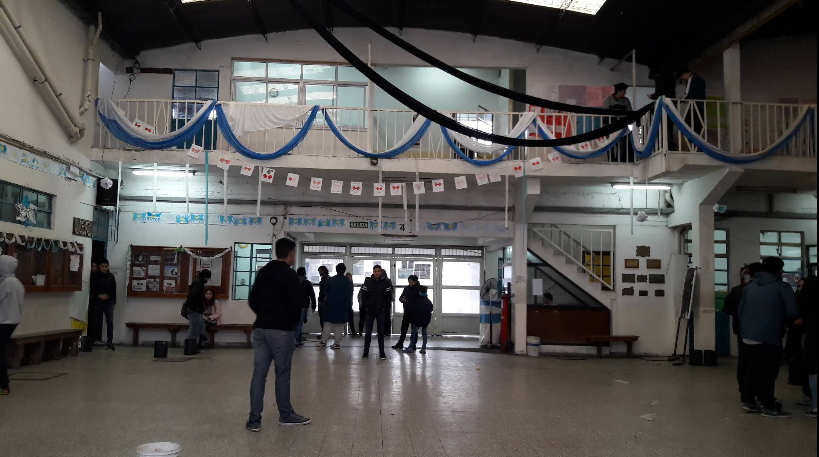

Bienvenidos a la Escuela de Educación Secundaria Técnica N°8 de Lanús "Almafuerte". Con más de 80 años de trayectoria en la formación técnica pública, impulsamos el desarrollo intelectual, profesional e integral de nuestros jóvenes. Ofrecemos las tecnicaturas de Informática, Construcciones y Electromecánica, brindando títulos oficiales habilitantes para una inserción laboral exitosa y la continuidad en estudios superiores.
El Ciclo Básico de la Escuela de Educación Secundaria Técnica N°8 de Lanús "Almafuerte" abarca los primeros tres años de cursada (1°, 2° y 3° año). Constituye una etapa formativa común y obligatoria, diseñada para brindar una sólida base científica, humanística y técnica a todos nuestros ingresantes. A través de una propuesta pedagógica integral que equilibra las clases teóricas en el aula con las prácticas formativas a contraturno, buscamos despertar el pensamiento lógico, promover la cultura del trabajo seguro y ofrecer las herramientas esenciales para que cada estudiante descubra su verdadera vocación profesional. Este trayecto inicial acompaña la transición de los alumnos hacia la escuela secundaria, garantizando una base de saberes sólidos y de convivencia para afrontar con éxito las especialidades del ciclo superior.